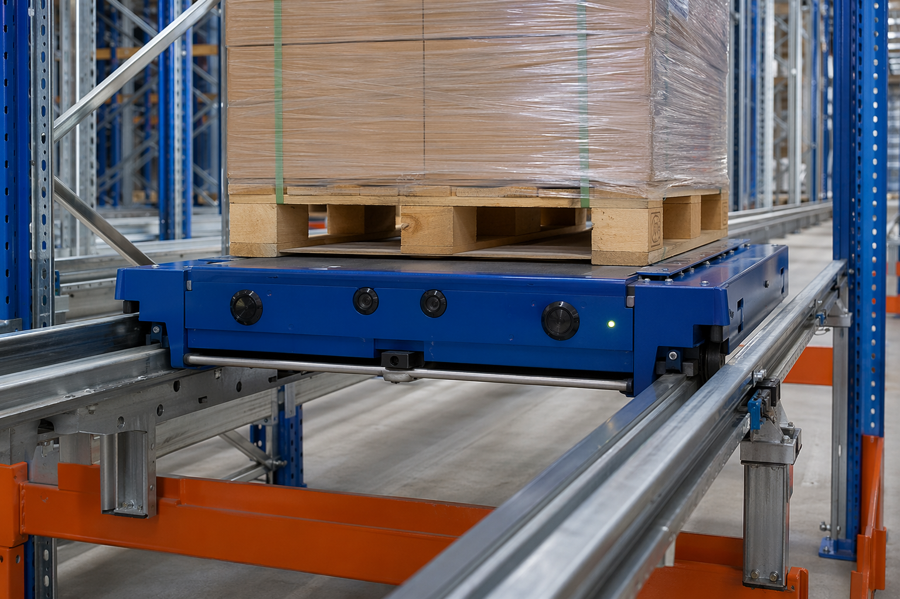
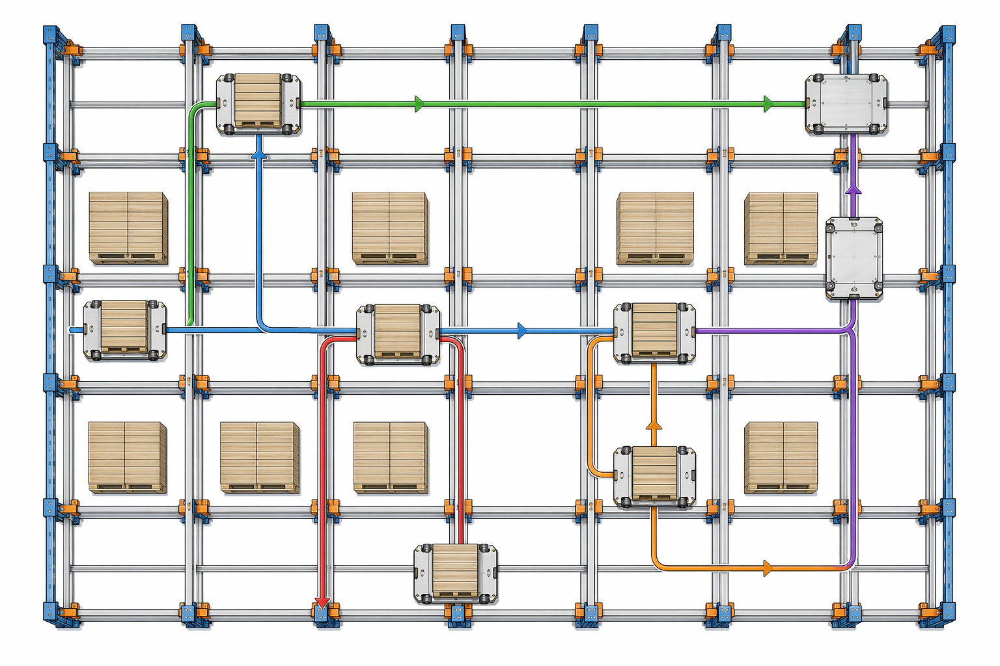
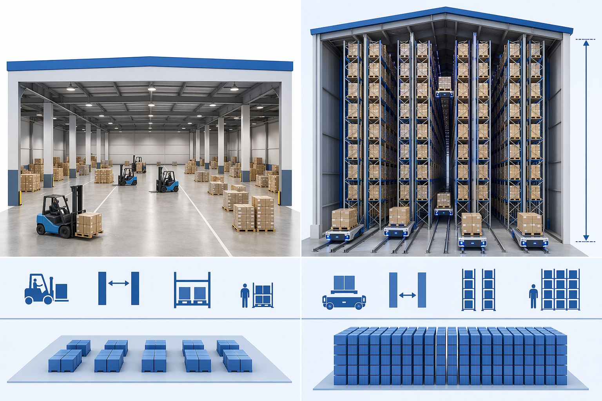

去年帮一个医药客户做物流中心改造，预算有限，空间就那么大，但老板要求存储量翻一倍、出库效率翻两倍。
团队里有人建议上AGV，有人说堆垛机更成熟，还有人直接说再租一个仓库。
我看了看现场条件，提了一个方案：四向穿梭车。
没人信。
半年后，数据出来了。存储密度提升280%，出库效率是原来的2.3倍。
今天把5个核心逻辑拆开讲，都是实打实的干货。

1｜评估标准：别用单机速度评判系统效率
很多人评价四向穿梭车，第一反应是看单机速度。
坦率的讲，单机速度确实不算快。水平运行速度大概在1.5到2米每秒，提升速度在0.5到1米每秒。跟堆垛机比，单机速度差远了。
但问题是，谁告诉你只能用一台？
四向穿梭车最大的优势是柔性。你可以根据业务量灵活调配车辆数量。旺季加车，淡季减车。一台车慢？上十台。十台还不够？上二十台。
堆垛机能这么干吗？不能。堆垛机是固定设备，装了几台就是几台，你没法临时加。
所以评价四向穿梭车的效率，不能看单机，得看系统整体吞吐量。 合理配置的情况下，系统的出入库效率可以达到传统方案的2到3倍。
很多项目翻车，就是因为用错了评估标准。

2｜路径规划：真正的技术活
四向穿梭车能在货架的横向和纵向轨道上自由行驶，听起来很灵活。
但灵活也意味着复杂。
如果路径规划做不好，十台车在货架里跑，分分钟堵成一锅粥。有的要往左，有的要往上，有的要换层，没有一套好的调度算法，效率还不如人工。
我见过一个项目，花了大价钱买了20台四向穿梭车，结果调度系统没做好，车辆互相等待、互相避让，实际效率只有理论值的40%。
典型的"硬件到位了，软件没跟上"。
好的路径规划要做到三件事：
实时感知：知道每台车的位置和状态
提前预判：让车在到达冲突点之前就调整路线
动态分配：让每台车都跑最优路线
说起来简单，做起来是另一回事。这块建议找有经验的集成商，别自己瞎琢磨。
3｜换层效率：被严重低估的优势
传统的立体仓库，换层是个大问题。堆垛机换层要先把货送到提升机，提升机换完层再交给另一台堆垛机。中间多了一次交接，时间就多了一截。
四向穿梭车不一样。它自己就能换层。
通过提升机，四向穿梭车可以带着货物直接从A层跑到B层，不需要二次交接。整个过程是"搬运-存取-换层"一体化的。
这个优势在医药物流里特别明显。医药仓库SKU多，同一个订单里的货可能分布在三四个层。传统方案要反复调度提升机和堆垛机，时间都花在等待和交接上了。
四向穿梭车直接一个车搞定，从A层取完货，自己跑到B层，再跑到C层，最后送到出库口。中间没有等待，没有交接，一气呵成。
我那个医药客户的出库效率之所以能翻2.3倍，换层效率的提升功不可没。
4｜空间利用率：隐藏的大招
四向穿梭车的货架可以做到24米甚至更高。跟传统平面仓库比，存储容量能提升300%以上。
这个数字怎么来的？两个维度：
高度维度：传统仓库一般5到8米，四向穿梭车的货架可以做到24米。光高度就多了3倍。
密度维度：四向穿梭车的巷道很窄，不需要像叉车那样留转弯空间。穿梭车本身就很窄，轨道也很窄，巷道宽度可以压缩到最小。
那个医药客户原来的仓库是平面的，存了大概8000个SKU。改造后同样面积，存了22000个SKU。老板看到这个数据的时候，当场就说再租仓库的事不提了。
还有一个细节：四向穿梭车的通道面积占比可以降到10%以下，传统仓库要给叉车留通道，占比高达30%到40%。省出来的面积，全是存储空间。

5｜维护成本：比你想象的低
很多人觉得自动化设备维护成本高。
确实，堆垛机的维护成本不低，因为它是一台复杂的大型设备，坏了就得停整个巷道。
四向穿梭车不一样。它是分布式系统，一台车坏了，其他车继续跑。不会因为一台车的故障导致整个系统停摆。
而且单体成本相对低，备件也便宜。你可以备两台车在仓库里，坏了直接换，十分钟搞定。堆垛机你能备一台吗？那成本你算算。
能耗方面也更省。单台车的功率一般在1到2千瓦，20台车同时跑也就30到40千瓦。堆垛机一台就十几千瓦了。
还有一个隐性成本：人工。四向穿梭车配合WMS系统，可以实现7×24小时无人值守。百事可乐在上海的智慧物流中心，就是用四向穿梭车实现了"黑灯仓库"，40000个库位，全天候自动运转。
写在最后
回到开头那个项目。存储密度提升280%，出库效率提升2.3倍，投入回收期大概3年。
这个结果不是四向穿梭车一个设备的功劳，是整个系统设计的功劳。设备选型、路径规划、WMS对接、人员培训，缺一环都不行。
四向穿梭车不是万能的。业务量太小、SKU太单一、场地条件太差的场景，可能不太适合。但如果你是做医药、快消、电商这些SKU多、订单波动大的行业，值得认真考虑。
如果你正在做仓储规划或设备选型，这篇建议收藏。 转发给团队里负责设备采购的同事，选型少走弯路。有问题评论区聊，毅哥看到都会回。
毅哥说物流 | 20多年医药物流全链路实战专家
聚焦于医药生产工艺优化、医药企业信息化咨询及绿色能源改造升级
致力于用AI与数字技术驱动医药企业精益增长
更多干货，关注：https://wuliu-coclaw.github.io/Github/
数据来源说明：本文效率数据基于作者25年从业经验及实际项目案例，具体效果因场地条件、设备配置、业务量等因素存在差异，仅供参考。